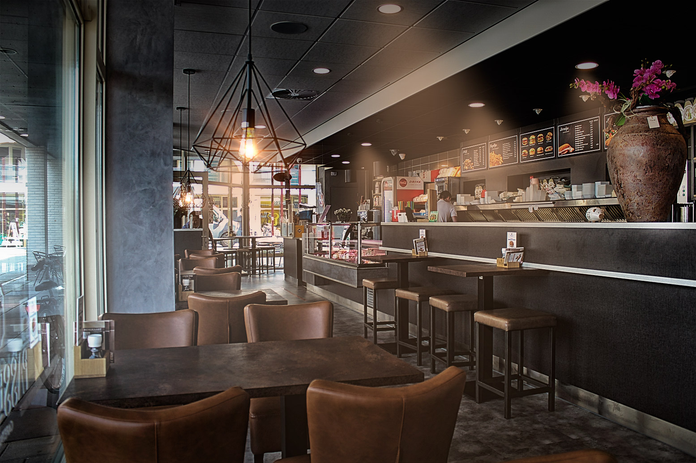
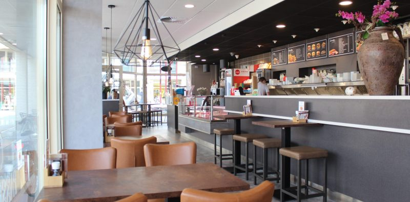
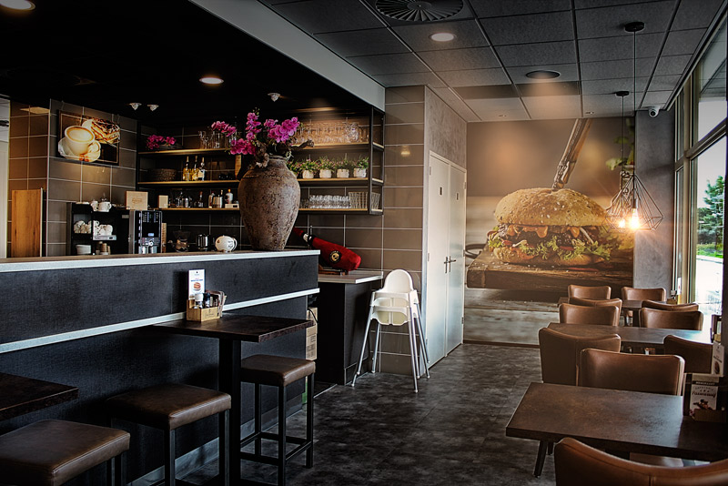
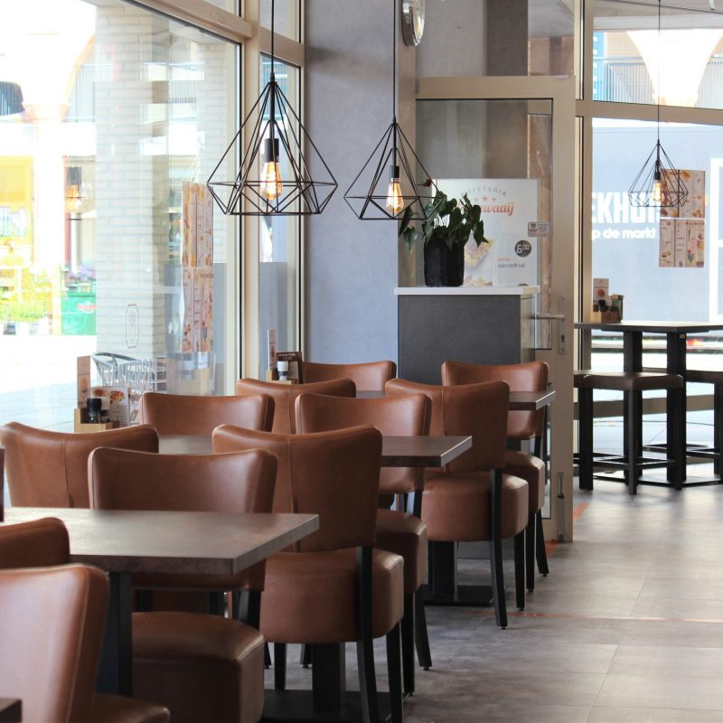
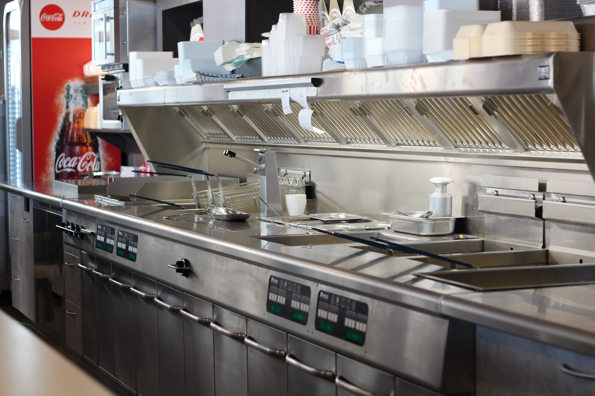
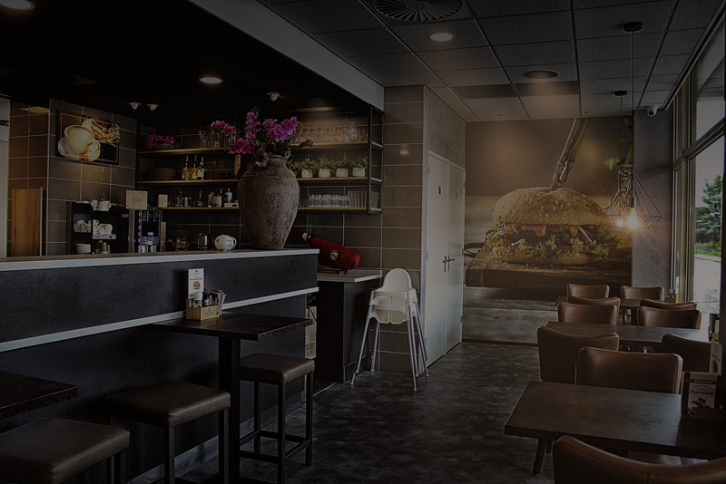

Cafetaria & bistro in Tiel
Passewaaij
Lekkere friet, burgers of snacks, in de ambiance van een bistro.
Dinsdag t/m zondag open van 11:30 tot 20:30
Uw cafetaria voor patat, snacks en meer
Bij Passewaaij haalt u een zak friet voor thuis, of u schuift aan in de zaak voor een burger, een broodje of een lunch. Wij verkopen uitsluitend A-merk producten.
Iedere maand stellen we een nieuwe selectie acties samen. Vraag in de zaak wat er deze maand in de aanbieding is.

Impressie
Donker hout, cognac leer en warm licht: zo ziet het eruit als u bij ons aanschuift.




Horeca-tijgers gezocht
Werken bij Cafetaria Passewaaij? Op dit moment zijn er geen vacatures beschikbaar. Kom gerust eens langs of mail naar info@cafetariapassewaaij.nl.
Al trek gekregen?
Dan kunt u ons hier vinden.
- AdresKamperfoelie 13, Tiel
- Telefoon0344 627422
- E-mailinfo@cafetariapassewaaij.nl
| Maandag | gesloten |
|---|---|
| Dinsdag | 11:30 – 20:30 |
| Woensdag | 11:30 – 20:30 |
| Donderdag | 11:30 – 20:30 |
| Vrijdag | 11:30 – 20:30 |
| Zaterdag | 11:30 – 20:30 |
| Zondag | 11:30 – 20:30 |